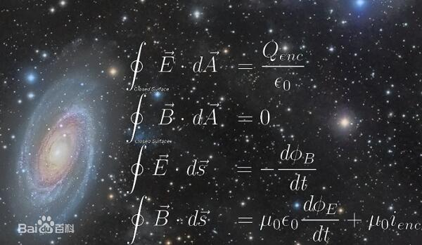

-

库仑定律
静电学最基本的定律是库仑定律。一个点电荷Q作用于另一个点电荷 q 的静电力 F，可以用库仑定律计算出来。点电荷是理想化的带电粒子。在这里，称点电荷 Q为源点电荷，称点电荷 q为检验电荷。静电力的大小跟两个点电荷之间的距离的平方成反比，跟 q 、Q 的乘积成正比，作用力的方向沿连线，同号电荷相斥，异号电荷相吸。
-
叠加原理：
在静电学里，叠加原理阐明，任何两个点电荷的相互作用与其它点电荷无关。因此，给予 N个点电荷，我们可以应用库仑定律，单独地计算每一个源点电荷 Qi 作用于检验电荷 q 的静电力 Fi 。高斯定律：
高斯定律阐明，流出一个闭表面的电通量与这闭曲面内含的总电荷量成正比。比例常数是电常数的倒数。用积分方程式形式表达。给予点电荷的分布资料和充分的边界条件，应用帕松方程式，我们可以计算在空间里任何位置的电位 V 。根据唯一定理，这也是唯一的解答。
-
麦克斯韦方程组是在库仑定律(适用于静电)、毕奥-萨伐尔定律和法拉第电磁感应定律等实验定律的基础上建立起来的。通过提取上述实验定律中带普遍性的因素，并根据电荷守恒定律引入位移电流，就可以导出麦克斯韦方程组。在物理上，麦克斯韦方程组其实就是电磁场的运动方程，它在电动力学中占有重要的地位。另一个基本的规律就是电荷守恒定律，它的内容是：一个封闭系统的总电荷不随时间改变。近代的实验表明，不仅在一般的物理过程、化学反应过程和原子核反应过程中电荷是守恒的，就是在基本粒子转化的过程中，电荷也是守恒的。
麦克斯韦方程组给出了电磁场运动变化的规律，包括电荷电流对电磁场的作用。对于电磁场对电荷电流的作用，则是由洛伦兹力公式给出的。将麦克斯韦方程组、洛伦兹力公式和带电体的力学运动方程联立起来，就可以完全确定电磁场和带电体的运动变化。因此，麦克斯韦方程组和洛伦兹力公式构成了描述电磁场运动和电磁作用普遍规律的完整体系。